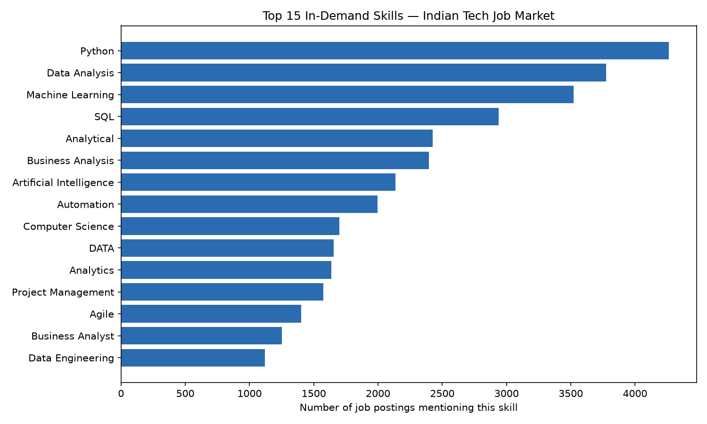
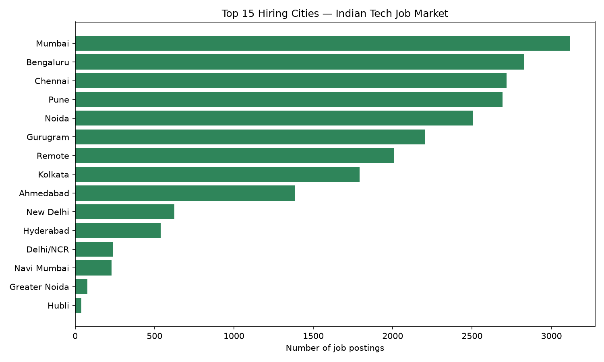
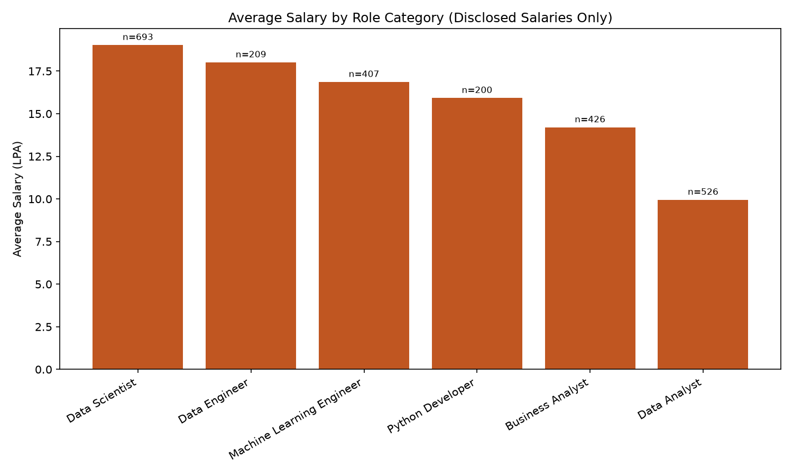
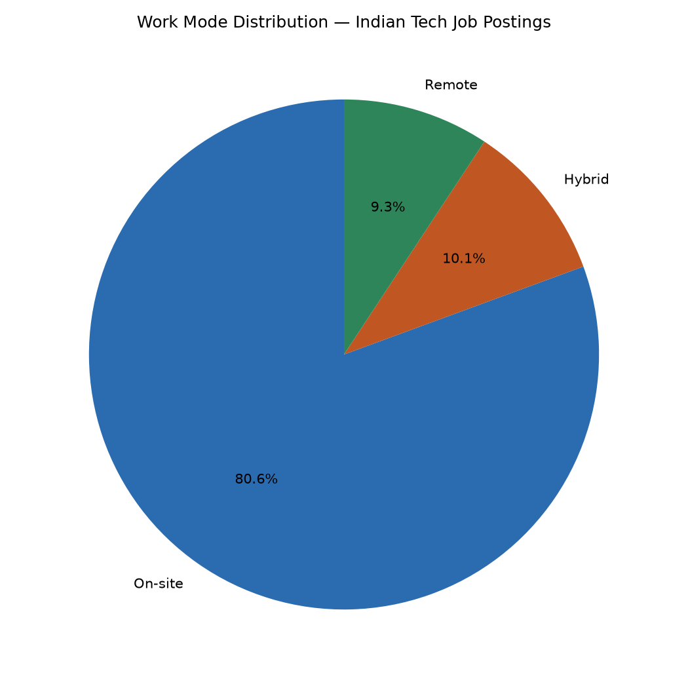
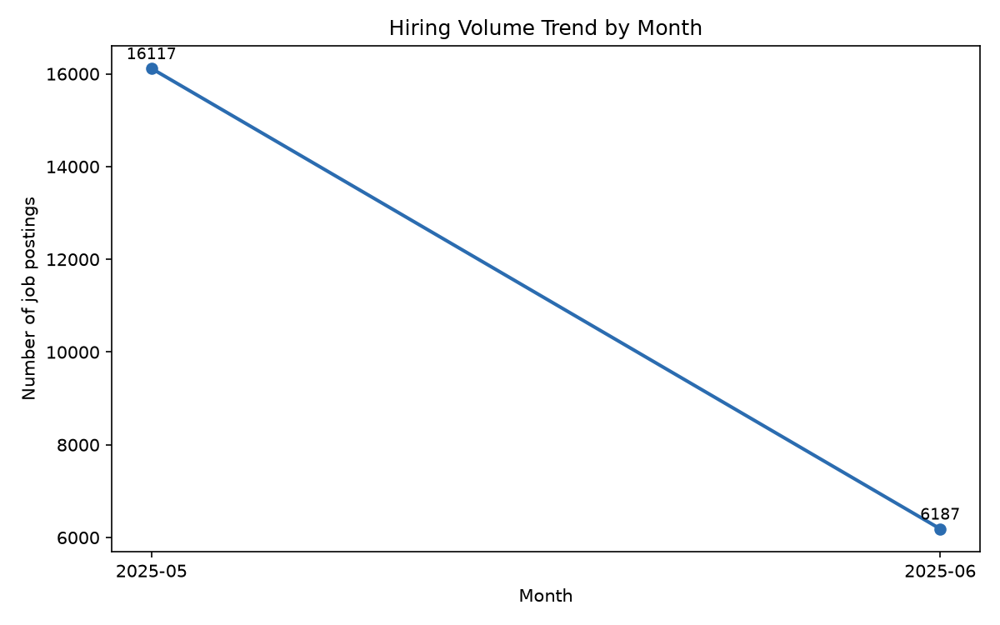

An end-to-end data engineering pipeline analyzing 23,201 tech job postings across India — ingestion, cleaning, normalization, SQL analysis, and visualization. View the full project on GitHub →
Job Postings
Companies
Unique Skills
Avg. Disclosed Salary



Note: sample sizes (n=) are shown above each bar — smaller samples are less statistically reliable.


Note: dataset covers a ~2-month scraping window (May–June 2025), not a full year.